寫會習慣 不寫也會漸漸習慣… 白日的工作忙了些 夜晚的閱讀與啃日劇也多了些 於是下學期都走了一半 我的愛妹妹日記卻還一直掛在我的心頭上而已! 這兩晚動手將這兩年半的照片裝進相本時 看著照片裡好像沒什麼變但卻又真的長大了的小人 無限感動也深切督促自己是該堅持把小人的成長紀錄下來 就算圖很多也沒關係…
升上二年級 愛愛對於小學生活習慣許多 老師的嚴格與許多的不知所以然也越來越有其泰然處之之道 只是課業上的不優成績 卻也讓她偶有感嘆與遺憾 尤其上學期的模範生選舉中 同學提名後卻被老師說資格不符讓她很是挫敗 心裡頭也就此認為她的功課很不好 所以不能當模範生 即使她是個上課認真 循規蹈矩 且樂於助人的好學生 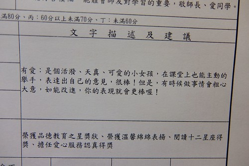 有時候我會想如果是徹哥那樣的天兵遇到這樣老師或許還好辦些 反正左耳進右耳出 但遇到很ㄍㄧㄥ的愛愛 換成我們聽她碎念時左耳進右耳出的 不過秉持著徹家一貫的家訓 不管好壞 這些經歷都是學習的機會 而且再熬個一學期升上三年級就換班級換老師 這是姑娘這半年最是開心的期待 因為是愛 有好多人的愛 也有好多的愛與人分享 這是安慰愛愛雞婆但不要求報時的最佳說辭~ 只是這個在外乖巧懂事的小女生 在家裡被當作小公主捧 捧久還真有些公主脾氣  然後家裡便常見公主與最寵公主的爹鬥嘴鼓 而且還常被逗哭了
然後家裡便常見公主與最寵公主的爹鬥嘴鼓 而且還常被逗哭了  標準的歡喜冤家 不過公主最愛的還是同一國的媽媽~ 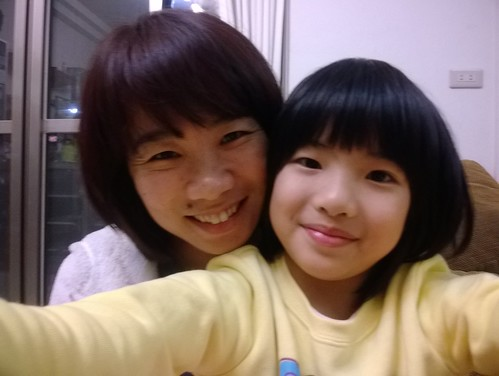 媽媽換了手機後 常拿著手機與徹愛自拍 愛愛有時心血來潮也會央求要玩自拍 經媽媽指點後 歪著頭裝可愛的模樣還真的有萌
標準的歡喜冤家 不過公主最愛的還是同一國的媽媽~ 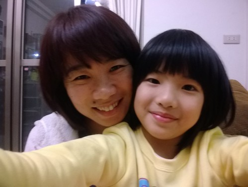 媽媽換了手機後 常拿著手機與徹愛自拍 愛愛有時心血來潮也會央求要玩自拍 經媽媽指點後 歪著頭裝可愛的模樣還真的有萌  小”大女孩”亭亭玉立的模樣悄然可見
小”大女孩”亭亭玉立的模樣悄然可見  我與徹爸常會被公主迷的目不轉睛
我與徹爸常會被公主迷的目不轉睛  忍不住就拿起相機拍下這些大同小異 但父母的我們卻總能津津樂道的一幕幕 等過紅綠燈 發呆著的愛愛
忍不住就拿起相機拍下這些大同小異 但父母的我們卻總能津津樂道的一幕幕 等過紅綠燈 發呆著的愛愛  假裝氣質OL的愛愛 我是小飛俠的愛愛 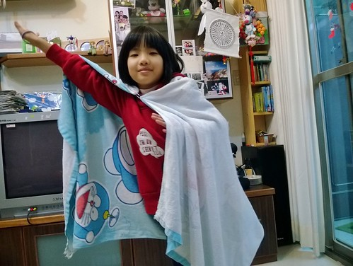 一臉得意的愛愛 偷偷自拍 陶醉不已的愛愛 一身帥氣 運動女孩樣的愛愛
假裝氣質OL的愛愛 我是小飛俠的愛愛 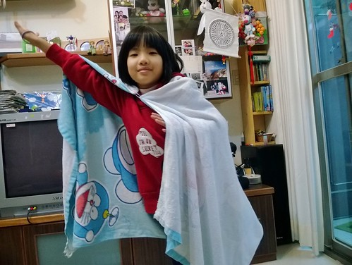 一臉得意的愛愛 偷偷自拍 陶醉不已的愛愛 一身帥氣 運動女孩樣的愛愛  越大越常出現的鬼靈精怪愛愛
越大越常出現的鬼靈精怪愛愛  自得其樂在最喜歡的家家酒遊戲中的愛愛
自得其樂在最喜歡的家家酒遊戲中的愛愛  照相時真的總是記得要閉嘴的愛愛 她說這樣才漂亮
照相時真的總是記得要閉嘴的愛愛 她說這樣才漂亮  偶而也能靜下來看些書的愛愛 安靜 認真時候的愛愛 空靈的特別迷人
偶而也能靜下來看些書的愛愛 安靜 認真時候的愛愛 空靈的特別迷人  至於睡著時候的愛愛 睡品真的很差阿! 是阿母最不想同床共枕的人
至於睡著時候的愛愛 睡品真的很差阿! 是阿母最不想同床共枕的人  而嘟嘴鬧彆扭的愛愛 提醒著爸媽 公主寵不得阿~
而嘟嘴鬧彆扭的愛愛 提醒著爸媽 公主寵不得阿~  有認真吃飯 但總是不知道吃到哪去的瘦愛愛 真的很讓媽媽嫉妒阿
有認真吃飯 但總是不知道吃到哪去的瘦愛愛 真的很讓媽媽嫉妒阿  完全遺傳媽媽的五音不全愛愛 每每總讓媽媽黯然失笑
完全遺傳媽媽的五音不全愛愛 每每總讓媽媽黯然失笑  常玩著體育課遊戲的愛愛 賣力在他一個人的扯鈴 跳繩 足球 體適能訓練中
常玩著體育課遊戲的愛愛 賣力在他一個人的扯鈴 跳繩 足球 體適能訓練中  雖然進步空間還很大 但喜歡運動的愛愛讓我們欣慰 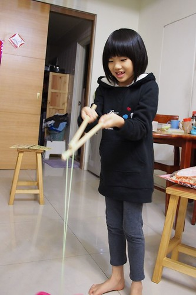 這是野貓路線的愛愛嗎? 小女生是真的挺想趕緊長大變成熟..
雖然進步空間還很大 但喜歡運動的愛愛讓我們欣慰 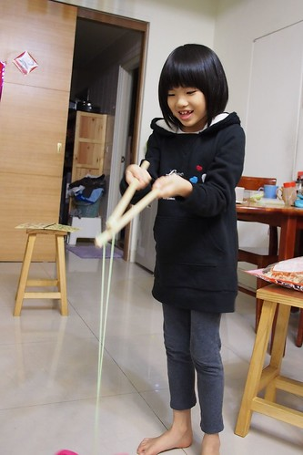 這是野貓路線的愛愛嗎? 小女生是真的挺想趕緊長大變成熟..  只是媽媽真的希望時間可以走慢一點 還想多收藏小時候的愛愛
只是媽媽真的希望時間可以走慢一點 還想多收藏小時候的愛愛  總是感嘆自己不是姐姐的愛愛 每次遇到小堂妹是形影不離的最佳小媬姆 小老師與好朋友 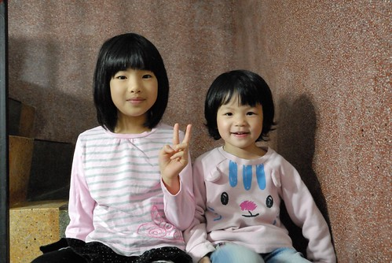 愛愛的美勞作品 作業本 書包…總是做的 整理的像她一樣的秀秀氣氣 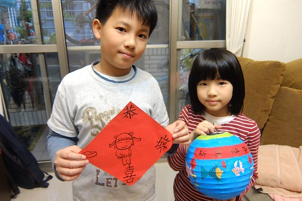 寒假中跟著媽媽上了兩天班 雖然是上班 模樣倒比較像是旅行去的背包客 可以上班當OL的愛愛 喜歡陶醉的不得了 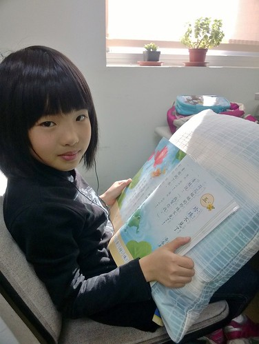 托這個冬天霜淇淋風潮的福 喜歡吃冰但總被嚴格管控的愛愛不知不覺也吃了好多隻阿 限定的草苺與巧克力 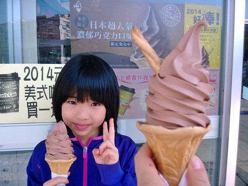 也幸運的都吃到了
總是感嘆自己不是姐姐的愛愛 每次遇到小堂妹是形影不離的最佳小媬姆 小老師與好朋友 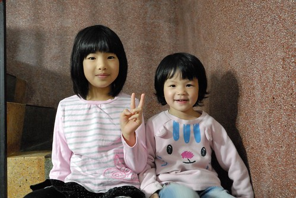 愛愛的美勞作品 作業本 書包…總是做的 整理的像她一樣的秀秀氣氣 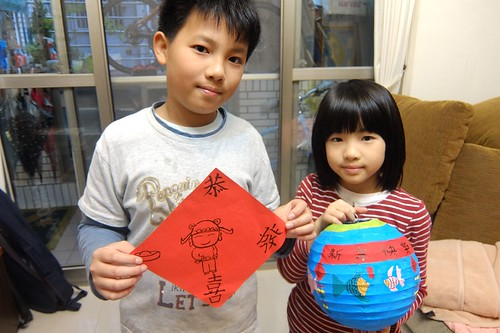 寒假中跟著媽媽上了兩天班 雖然是上班 模樣倒比較像是旅行去的背包客 可以上班當OL的愛愛 喜歡陶醉的不得了 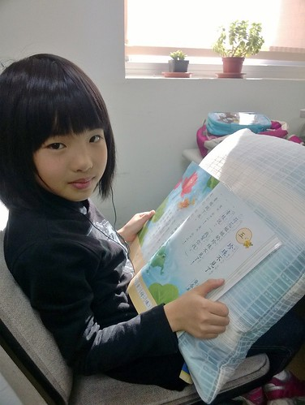 托這個冬天霜淇淋風潮的福 喜歡吃冰但總被嚴格管控的愛愛不知不覺也吃了好多隻阿 限定的草苺與巧克力 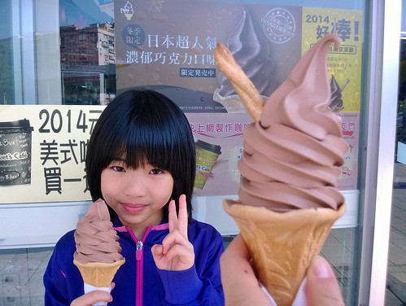 也幸運的都吃到了  愛愛努力的保健身體不要生病 為的就是享受這一隻隻甜滋滋 冰涼涼的霜淇淋 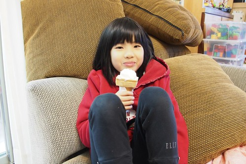 很多衣褲 愛愛穿了好多年 從八分褲變六分褲 再到四分褲 可也好些衣服不知不覺就太小不能穿了 同時 愛愛對於穿著也越來越有主見與風格 媽媽得多費心點了
愛愛努力的保健身體不要生病 為的就是享受這一隻隻甜滋滋 冰涼涼的霜淇淋 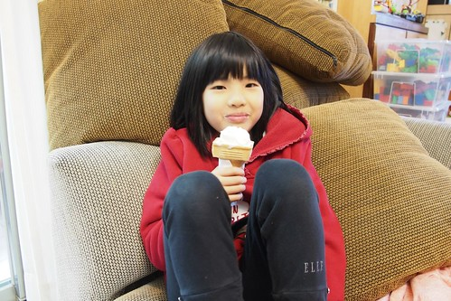 很多衣褲 愛愛穿了好多年 從八分褲變六分褲 再到四分褲 可也好些衣服不知不覺就太小不能穿了 同時 愛愛對於穿著也越來越有主見與風格 媽媽得多費心點了  偶而還是很難接受 原來八歲的小女生已經是這樣大的模樣 再兩年 再四年… 哇~ 媽媽真的不敢想下去
偶而還是很難接受 原來八歲的小女生已經是這樣大的模樣 再兩年 再四年… 哇~ 媽媽真的不敢想下去  最後 還是多記得這樣”小” 這樣”呆”的愛愛吧! 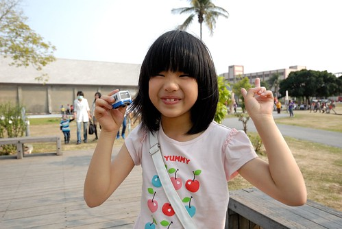
最後 還是多記得這樣”小” 這樣”呆”的愛愛吧! 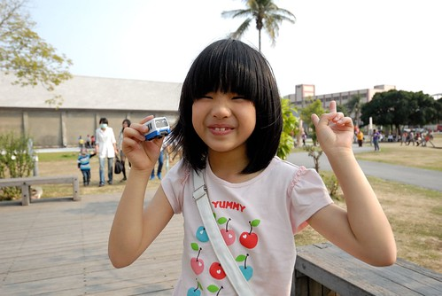